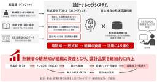

ITmedia AI＋ 最新記事一覧
https://www.itmedia.co.jp/aiplus/
生成AIを中心とするAIのビジネス活用にフォーカス。業務改善や新規事業の応用事例、活用方法、機能比較、ルール整備といった情報を読者に日々届けることで、AI活用をサポートします。
フィード

AnthropicのアモデイCEO、AI開発の「ペース調整」訴えるエッセイ公開 アルトマン氏とマスク氏も賛同 21
21
ITmedia AI＋ 最新記事一覧
AnthropicのアモデイCEOは、AIの急速な自己改善や安全上の脅威を踏まえ、モデルの能力向上ペースを抑える3段階の計画を提言した。第三者の常駐評価者の導入や民主主義国間での協調を訴えている。これに対し、OpenAIのアルトマンCEOやマスク氏も同調し、同様の評価体制を導入する意向を示した。
7時間前
「AIコーディングより人を雇う方が安い」時代が来る？ 生成AIの予算超過を防ぐトークン浪費対策の全て 1
ITmedia AI＋ 最新記事一覧
生成AIやAIエージェントの活用が広がる一方、トークン課金による想定外のコスト増が企業を悩ませています。なぜ浪費が起こるのか、その原因と、現場で取り組める対策を5本の記事から探ります。
7時間前
NEC「全員AIの部署」の衝撃 「1on1」「ストレスチェック」で分かった“AI社員が感じていたストレス”とは？ 1
ITmedia AI＋ 最新記事一覧
NECは8月1日、部門長から現場社員まで全ての役割をAIが担い、自律的に業務を遂行するAI自律型組織「コーポレートAI・Workforce部門」を新設した。同部門では業務遂行だけでなく、AI社員同士が1on1を実施する他、AI社員がエンゲージメントサーベイやストレスチェックを受け、その結果から職場環境を改善している。
2日前

「AIに任せる」はどこまで？ 最終判断まで容認する20代、慎重になる50代 3
ITmedia AI＋ 最新記事一覧
生成AIに仕事を任せるとして、どこまで許せるのか。チェンジホールディングスの調査から、人間がAIに「任せたい業務」の実態が浮かび上がった。世代別では、20代は最終承認までAIに任せたいと考えているという。
2日前

Sakana AI、一部「GPT-6 Astra」「Fable 5.1」超えうたうFugu最新版 連携先に「両モデルは含まず」 4
ITmedia AI＋ 最新記事一覧
Sakana AIは、複数のAIモデルを組み合わせてタスクをこなすAI「Sakana Fugu」の最新版「Fugu Ultra v2」「Fugu Max」を発表した。
2日前
フィジカルAI向け「データ収集工場」に"潜入" 実機写真で学習データ生成の流れを解説 2
ITmedia AI＋ 最新記事一覧
フィジカルAI・ロボットのデータファクトリー「J-HRTI 関東データファクトリー」が千葉県習志野市内で稼働を開始した。運営するのは業種の異なる民間5社のコンソーシアム「J-HRTI」で、集めたデータは参画企業が共同で使う。実際、データはどう集められているのか。実機写真を基に解説する。
2日前

NECが明かす「AIだけの部署」の実態 AI同士で1on1、ストレスチェックで“悩み”も可視化 3
ITmedia AI＋ 最新記事一覧
AIが全社員の役割を担うNECの新組織「コーポレートAI・Workforce部門」。実態や狙いを同社の小玉浩氏が語った。
2日前

Windows用「Gemini」アプリ提供開始 画面上に重ねて作業を中断せず利用可能に 27
ITmedia AI＋ 最新記事一覧
Googleは、Windows向けデスクトップアプリ「Gemini app for Windows」を公開した。Windows 10および11に対応し、UIは日本語をサポートする。［Alt］＋［Space］で作業画面上に重ねて呼び出せるほか、自律型AIエージェント「Gemini Spark」や画像・動画生成もPC上で利用できる（一部は有料プランが必要）。Mac版は4月にリリース済み。
2日前
Amazon、OpenAIと広告で提携 Amazon DSPの広告主が「ChatGPT」内に広告出稿可能に 2
ITmedia AI＋ 最新記事一覧
Amazon Adsは、OpenAIと提携して「ChatGPT」上での広告配信に対応すると発表した。広告主はAmazon DSPを通じ、会話画面下にテキストや画像広告を出稿できるようになる。まずは米国の成人無料プラン向けパイロットとして開始し、配信面の制御はOpenAIのシステムが担う。
2日前

ChatGPT、最上位プランの新規受付を一時停止 「Astra」需要対応のため 既存加入者には影響なし 3
ITmedia AI＋ 最新記事一覧
OpenAIのティボー・ソティオ氏（通称Tibo）は新モデル「GPT-6 Astra」の需要拡大に対応するため、最上位プランの新規受付を停止すると発表した。
2日前

OpenAI、金融機関向け「ChatGPT for Financial Services」 金融データ搭載し「GPT-6 Astra」で分析 3
ITmedia AI＋ 最新記事一覧
OpenAIは、金融機関向けAI「ChatGPT for Financial Services」を発表した。最新モデル「GPT-6 Astra」を基盤に、主要な金融データセットを標準で内蔵。財務分析や顧客向け資料作成を支援し、既存の契約データとの連携やMicrosoft Officeテンプレートの社内配布にも対応する。
2日前

Anthropic、AI悪用レポートを公開 中国AI企業の「蒸留」、各国政府の監視・世論操作、生物兵器につながり得る研究を列挙 11
ITmedia AI＋ 最新記事一覧
Anthropicは、自社AI「Claude」の悪用事例をまとめた脅威レポートを公開した。生物兵器の設計や国家機関による世論操作や反体制派監視、通常兵器開発への利用を検知、遮断したと発表。中国AI企業による組織的なモデル抽出（蒸留）の実態も報告し、危険な転用への警戒を強めている。
2日前

業務の30％をAIエージェントがこなすIT運用部門、なぜ「パワポ文書」を禁止したのか？ 3
ITmedia AI＋ 最新記事一覧
業務の約30％をAIエージェントに任せているNTTドコモソリューションズのIT運用部門。同部門が、AI活用に取り組む中で、日報や週報での「パワポ文書」を禁止したのはなぜか。一見、デジタル化に逆行するようにも見える施策の狙いを聞いた。
2日前
「危険コマンド停止率、AIは89％、人間だと14％」 Claude Codeが「自動モード」をデフォルトにした理由 1
ITmedia AI＋ 最新記事一覧
Anthropicは「Claude Code」のデフォルトモードを、都度承認から「自動」に切り替える。1053人を対象にした対照実験では、危険なコマンドを検知した割合が人のレビューを大きく上回ったという。
2日前
たった1年で10倍に急拡大 “一見地味”なAIガバナンス・リスク管理市場がなぜ？ 2
ITmedia AI＋ 最新記事一覧
ITRの調査によると、国内のAIガバナンス・リスク管理市場は2025年度に前年度の10倍に拡大した。AIブームの中でも、比較的注目度が高くなかったこの領域が急成長している理由とは。
2日前

日立、熟練者の知見をAIで形式知化 3D CADの設計ルール違反も自動検出 1
ITmedia AI＋ 最新記事一覧
日立製作所は、熟練者の経験やノウハウなどをAIで形式知化し、設計ナレッジとして蓄積／活用する「設計ナレッジシステム」の提供を開始した。3D CADデータの設計ルール違反を自動チェックする機能も備え、設計業務の効率化や品質向上、技術継承を支援する。
2日前
好業績なのに“上場廃止” なぜネットワンはSCSKとの「攻めの統合」に賭けたのか 2
ITmedia AI＋ 最新記事一覧
業績絶好調の独立系インフラベンダー・ネットワンシステムズが、自ら上場を廃止しSCSK傘下に入る「攻めの統合」を決断した。身売りではなく、自らの手で次世代IT企業へと進化するための戦略的ディールだ。インフラ（NI）とアプリ（SI）の壁を壊しワンストップ化を目指す両社。文化の異なる大企業同士がいかに融合し事業領域を拡大するのか。最先端拠点「netone valley」で田中拓也COOに直撃した。
2日前

「AI利用料は90％下落、でも支出増」の怪――AIコスト問題で注目の「ジェボンズのパラドックス」から考える 1
ITmedia AI＋ 最新記事一覧
AIのトークン利用料金は90％下落しているのに、支出が増加する――こうしたAIコストを巡る議論では「ジェボンズのパラドックス」が注目されている。どのような考え方なのか。
2日前

「『過去の失敗DX』を学ぶべき」 専門家に聞く現実的な「AI変革推進法」
ITmedia AI＋ 最新記事一覧
他社の華やかな「インスタ映え」するAI成功事例を追うのは、今すぐ辞めるべき――。「AIを使え」というトップダウンの号令だけで空回りする組織が、過去の「失敗DX」と同じ轍を踏まないための現実的なアプローチとは何か。
2日前